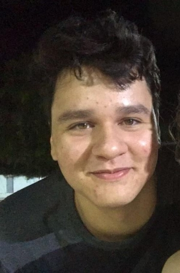
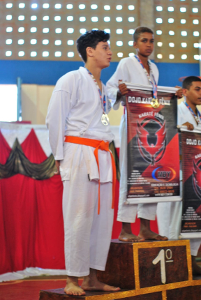
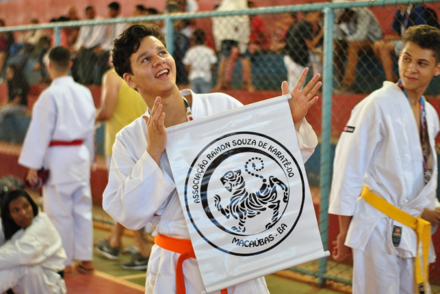
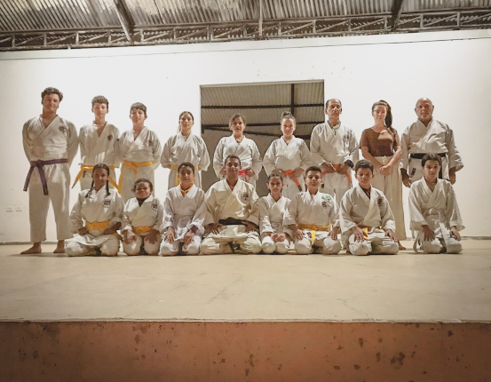

Bem-Vindos ao meu primeiro site!

Sobre Mim:
Olá, me chamo Matheus Antony, sou de Macaúbas-BA e nasci em 26/11/2003.
Hobbies:
Gosto de ter contato com a natureza sempre. Gosto também de jogos totalmente aleatórios como Minecraft, War Thunder, Snowrunners, Kerbal Space Program e a franquia de Assassins's Creed. Já pratiquei artes marcias como Karâte Shotokan por 10 anos e atualmente sou faixa roxa (2º kyu)
; ; 
Curiosidades:
Aleatoriamente eu gosto de tirar fotos de paisagens